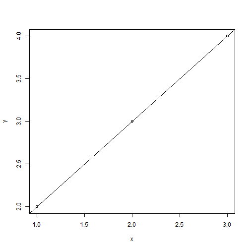

General description
The shiny application developed calculates the linear model, which best fits the given X and Y variables.
Then, the fitted model is represented in two ways, as a plot and as a text output.
Input
The application takes two inputs, X and Y values.
Note:
- They must be both numbers, separated by ',' (commas).
- They must have the same length.
E.g.: the input:
- X values: 1, 2, 4
- Y values: 3, 5, 6
will fit the points: (1,3), (2,5), (4,6)
Output
Fitted linear model:
- Intercept: The intercept of the fitted linear model.
- Slope: The slope of the fitted linear model.
Plot: The plot represents the points given by the user and the fitted linear model.
Example
The input:
- X values: 1, 2, 3
- Y values: 2, 3, 4
Will create the plot:

Application UI
This is how the application looks like when it's running: